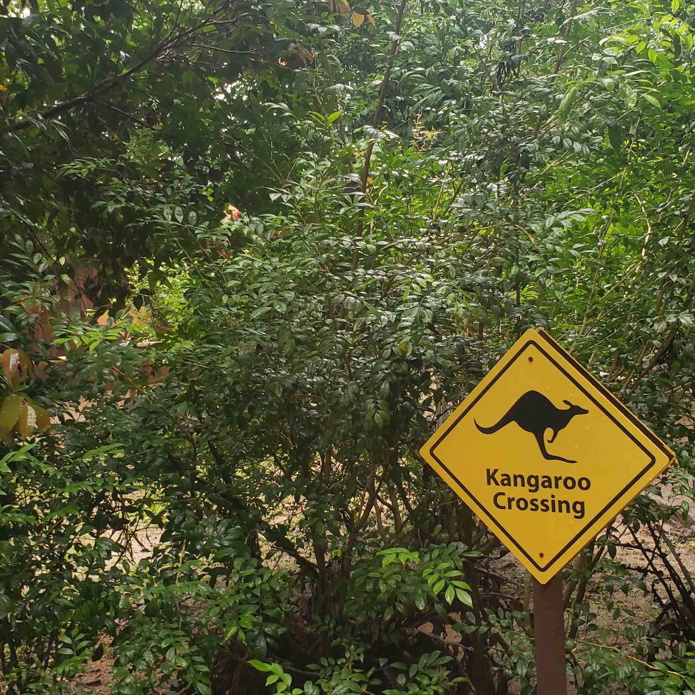
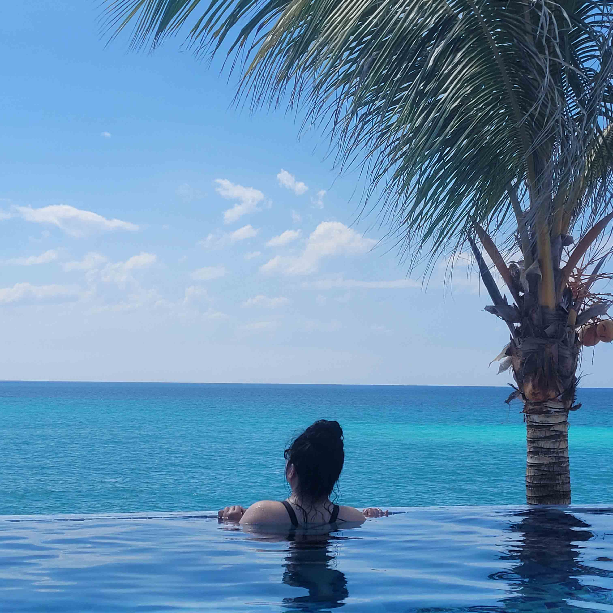

Central Park - New York, NY, United States
Nothing beats taking a walk in Central Park with a cup of coffee in your hand to make yourself feel like a true New Yorker. One of the city's most captivating charms is the striking contrast between the towering high-rises of the concrete jungle and the peaceful oasis of nature tucked within Central Park. To fully appreciate New York City, experiencing both is a must. New York summers are humid and uncomfortable (or so I’ve heard), so I highly recommend going in the fall (like myself) or the spring. This is also the best place for people watching and for feeding pigeons pieces of old stale bread, just like in the movies. Just be sure to check if feeding the wildlife is allowed!
Read MoreSingapore Zoo (Mandai Wildlife Reserve) - Singapore
An unconventional choice, and certainly not everyone’s first choice, but it made the list for a good reason. Firstly, Singapore is one of the greenest (and most humid) cities I’ve ever visited. Despite being a small city, it houses one of the largest zoos in the world. Its design immerses you in what feels like a true jungle experience—not just because of the lush greenery but because some animals, like monkeys and kangaroos, roam freely in certain areas! By all means, sip on your coffee on your jungle adventure, but keep an eye on it—there’s a chance a monkey might snag it. Side note, considering th heat humidity, I would consider enjoying your coffee iced.
Read MoreHotel Playa Vista Azul - Varadero, Cuba
A country known for coffee and beautiful beaches. There was no doubt it would make the list. Varadero may be a tourist area, but you can’t deny the scenic views are worth the premium. My friends and I stayed at Playa Vista Azul, which featured a bright blue infinity pool overlooking the ocean. Every time our tour bus pulled up to the lobby, you could hear a collective gasp from the group. If you’re tired of enjoying your coffee by the pool, the beach was just a 5-10 minute walk from your room. Don't forget your cigar!
Read More